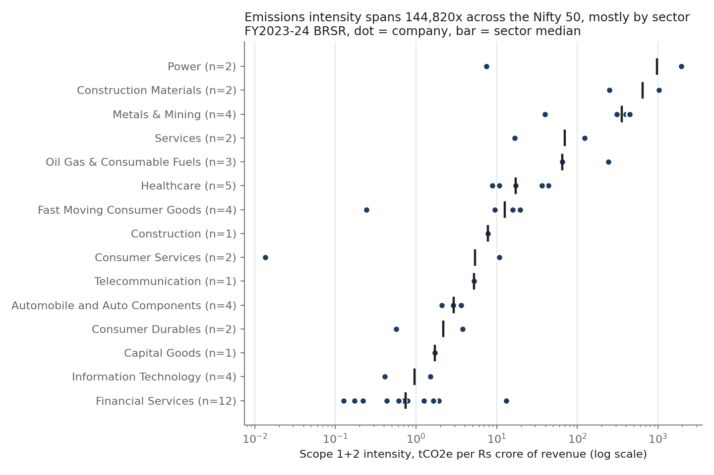
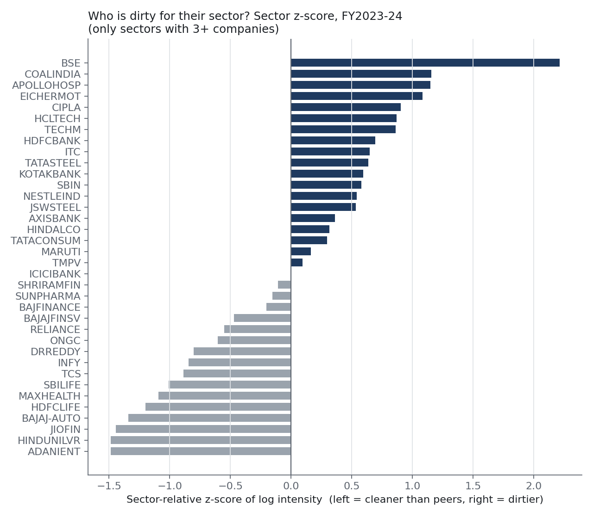
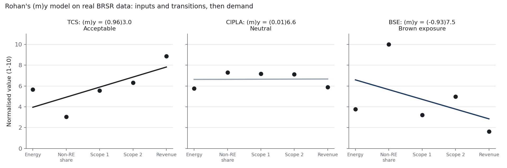
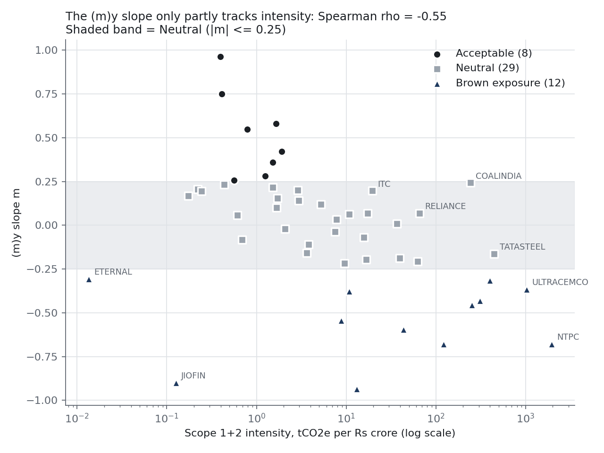

| Analyst | Mohammad Faiz Ahmad | Status | Final |
|---|---|---|---|
| Data source | SEBI BRSR, Principle 6 (XBRL + PDF), via NSE | Period | FY2022-23 and FY2023-24 |
| Coverage | 49 of 50 Nifty 50 companies, 98 company-years | Version | v1.0, October 2026 |
Questions. (1) Using only what companies are legally required to disclose, who emits the most carbon per rupee earned, and is it getting better? (2) Does a regression-based "carbon grade" tell us anything that a simple ratio doesn't?
Answer in one line. The raw filings can't be trusted as filed. Once they're fixed, carbon in the Nifty 50 is a story about five companies and one sector divide. The improvement in the headline numbers comes from revenue growth, and the grading model is too unstable to use.
| Field | Meaning |
|---|---|
scope1_tco2e | Direct emissions: fuel the company burns itself |
scope2_tco2e | Indirect emissions from purchased electricity |
energy_gj | Total energy consumed |
energy_renewable_gj | Energy from renewable sources |
revenue_cr | Revenue from operations (Rs crore), from the same filing |
source_url | Link to the NSE file each value came from |
| Metric | Definition |
|---|---|
| Intensity | (Scope 1 + Scope 2) ÷ revenue, tCO2e per Rs crore |
| Scope 1 share | Scope 1 ÷ (Scope 1 + Scope 2) |
| YoY change | FY24 vs FY23, excluding breaks above 3x |
| Sector z-score | z-score of log10 intensity within a sector (sectors with 3+ companies only) |
Emissions and revenue always come from the same filing, so they share the same boundary (33 standalone, 16 consolidated). Mahindra & Mahindra is excluded because its files return 404 on NSE.
Before any analysis, I checked every machine-readable value against the human-readable PDF. 19 of 49 filings (39%) had at least one value that couldn't be used as tagged.
| Error type | Companies | Who | Example / impact |
|---|---|---|---|
| Wrong emissions unit | 3 | NTPC, Tata Steel, ITC | NTPC filed 352 million tonnes under a "tonnes" tag, understating it by 1,000,000x |
| Wrong energy unit | 8 | NTPC, ITC, UltraTech, Adani Ports, TCS, Bajaj Auto, BSE, Axis Bank | TJ, MJ or PJ filed under a GJ tag; Axis's XBRL value doesn't match its own PDF |
| Wrong revenue unit | 8 | Incl. HCL (Rs million) | Rs crore typed where rupees were expected |
| Methodology breaks | 4 | Apollo, Tata Consumer, SBI Life, Axis | Apollo's Scope 1 went from 8,033 t to 731,919 t; excluded from YoY only |
data/corrections.csv. Hindalco (whose PDF refers to its annual report), Coal India and Cipla (both with unusually high emissions per unit of energy) are kept as filed and flagged.Intensity spans 144,820x, from Eternal at 0.013 to NTPC at 1,946 tCO2e per Rs crore; the median company is at 5.2. Sector alone explains 74% of the variance in log intensity.

| Sector | Median |
|---|---|
| Power | 976.8 |
| Construction Materials | 641.2 |
| Metals & Mining | 353.9 |
| Oil, Gas & Fuels | 65.5 |
| Healthcare | 17.2 |
| FMCG | 12.6 |
| Automobile | 2.9 |
| IT | 0.96 |
| Financial Services | 0.74 |
| tCO2e per Rs crore, FY24, selected sectors | |
| # | Company | Sector | Scope 1+2 (Mt) | Share of total | Intensity | (m)y grade |
|---|---|---|---|---|---|---|
| 1 | NTPC | Power | 352.5 | 52.2% | 1,946 | Brown |
| 2 | UltraTech Cement | Construction Materials | 73.1 | 10.8% | 1,031 | Brown |
| 3 | Tata Steel | Metals & Mining | 63.0 | 9.3% | 447 | Neutral |
| 4 | JSW Steel | Metals & Mining | 53.2 | 7.9% | 398 | Brown |
| 5 | Reliance | Oil, Gas & Fuels | 37.7 | 5.6% | 66 | Neutral |
| 6 | Coal India | Oil, Gas & Fuels | 34.7 | 5.1% | 244 | Neutral |
| 7 | Hindalco | Metals & Mining | 25.7 | 3.8% | 310 | Brown |
| Total, 49 companies | 675.3 | 100% | The 12 financial firms: 0.28% | |||
→ Any decarbonisation conversation about the Nifty 50 is really about five to seven companies. Banks look clean only because financed (Scope 3) emissions aren't required to be reported.

A fair comparison is within a sector, so I z-scored each company's log intensity inside its industry (only industries with 3+ companies).
→ This is the view I'd put in front of a decision-maker, not the raw ranking.
The (m)y model was proposed by a senior as a concept, without data. Score five facts about a company from 1 to 10, fit a straight line through them in a fixed order, and grade the company by the slope m and intercept y: Acceptable the line slopes up · Neutral flat · Brown exposure slopes down.
| Point | Deck factor | BRSR field I mapped it to | Scaling |
|---|---|---|---|
| 1 | Input | Total energy consumed | log10, min-max to 1-10 |
| 2 | Input | Non-renewable share of energy | min-max to 1-10 |
| 3 · 4 | Transition | Scope 1 · Scope 2 emissions | log10, min-max to 1-10 |
| 5 | Demand | Revenue from operations | log10, min-max to 1-10 |
The deck gives no numeric thresholds, so I set the bands myself: Acceptable if m > 0.25, Neutral if |m| ≤ 0.25, Brown if m < −0.25.


| Variant | Acceptable | Neutral | Brown | Grades changed | ρ vs intensity |
|---|---|---|---|---|---|
| Default (log min-max, band 0.25) | 8 | 29 | 12 | 0 | −0.55 |
| Linear min-max scaling | 4 | 6 | 39 | 32 | −0.07 |
| Percentile-rank scaling | 15 | 18 | 16 | 15 | −0.47 |
| Neutral band 0.10 | 20 | 10 | 19 | 19 | −0.55 |
| Neutral band 0.50 | 4 | 39 | 6 | 10 | −0.55 |
| Drop non-renewable share | 25 | 15 | 9 | 21 | −0.77 |
| Drop energy | 6 | 10 | 33 | 26 | −0.21 |
→ A rating that changes for 32 of 49 companies when one modelling choice changes is not a rating. If anything, dropping the non-renewable-share point makes it track intensity better (ρ = −0.77).
| For… | Recommendation |
|---|---|
| Anyone using BRSR data | Never trust the XBRL as filed. Run a unit audit against the PDF first, because 39% of filings fail it. |
| Ranking companies | Use sector-relative intensity, not one cross-industry list. |
| Tracking progress | Report absolute emissions next to intensity. Intensity alone hides a 2.8% rise in absolute emissions. |
| Composite "grades" | Test a model's stability before shipping it. This one fails on size bias and scaling choices; use intensity plus the sector z-score instead. |
| Step | Command / file |
|---|---|
| Extract and correct | python extract.py → data/brsr_emissions.csv (applies data/corrections.csv) |
| PDF unit audit | python audit_units.py → data/pdf_unit_audit.csv |
| Analysis and charts | python analysis.py → data/company_metrics.csv, charts/ |
| SQL cross-check | python run_sql.py → sql/results/ (DuckDB CTEs and window functions; asserts the results match the Python) |